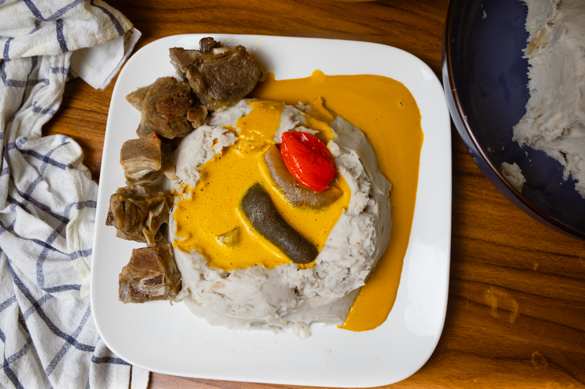

Achu Recipe

Description:
Achu soup is a traditional food in Cameroon, a yellow soup. It is made with cocoyam,Spices, water, palm oil, and "canwa or Nikki" (limestone), and fish are other ingredients.
Ingredients:
- 700g Meat beef, smoke fish, garden eggs, mushrooms, tripe, cow, stock fish, skin ( All well cooked)
- 4 cups Water
- 1 tsp bouillon powder or maggie
- 1 tbsp ground limestone
- 2 tbsp Achu Spices
- ½ cup warm red palm oil
- 1 hot pepper Habenero
- 1/2 tsp Salt to taste
Steps:
- Rinse the yellow split peas and soak them in water for at least 2 hours.
- In a large pot, heat oil and sauté onions, carrots, and celery until softened.
- Add the soaked split peas, vegetable broth, bay leaves, and spices to the pot. Bring to a boil, then reduce heat and simmer for 1-2 hours until the peas are tender.
- Remove the bay leaves and use an immersion blender or a regular blender to puree the soup until smooth.
- Season with salt and pepper to taste. If the soup is too thick, add more vegetable broth or water to thin it out.
- Serve the Yellow Soup hot with a drizzle of olive oil and a sprinkle of fresh herbs, such as parsley or thyme.